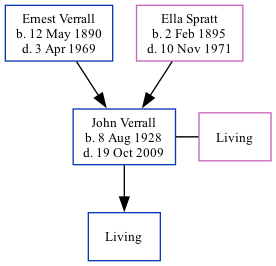

John Leslie Verrall 1928 - 2009 [ Home ] | [ Calendar ] | [ Surnames Index ] | [ Family History ]The 4th of 5 children of Ernest Verrall (a window cleaner) and Ella Spratt (a charwork)John Verrall , the first cousin once-removed on the father's side of Nigel Horne , was born in Thanet, Kent, England on Aug 8, 19281,2,3 and. He married Margaret Nash (with whom he had 1 surviving child) in Thanet around Aug 19534 (Jul/Aug/Sep). In 2003, he lived at 33 Park Side, Westcliff-On-Sea, Essex, England5 .
He died on Oct 19, 2009 in Westcliff-On-Sea2,3 .
Parents Ernest Charles was born on May 12, 1890Ella was born on Feb 2, 1895Citations England & Wales, Birth Index: 1916-2005 Online publication - Provo, UT, USA: The Generations Network, Inc., 2008.Original data - General Register Office. England and Wales Civil Registration Indexes. London, England: General Register Office. © Crown copyright. Published by permission of the Cont England and Wales, Death Index, 2007-2013 Ancestry.com Operations, Inc. United Kingdom Deaths 2007-2017 - Findmypast England & Wales, Marriage Index: 1916-2005 Online publication - Provo, UT, USA: The Generations Network, Inc., 2009.Original data - General Register Office. England and Wales Civil Registration Indexes. London, England: General Register Office. © Crown copyright. Published by permission of the Cont UK, Electoral Registers, 2003-2010 Notes Named after his grandfather John Spratt, whose funeral may well have been on the same day John Verrall was born.
Media England & Wales births 1837-2006 Transcription - BMD-B-1928-3-AZ-001290-061 England & Wales marriages 1837-2008 Transcription - BMD-M-1953-3-AZ-001693-112 United Kingdom Deaths 2007-2017 - BMD/D/MILLEN/002016166 Family Tree Map
Generated by Ged2Site . Last updated on Apr 1, 2025